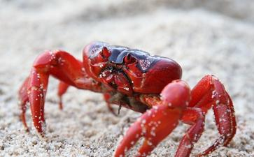

我叫苏昭兴，是一个演艺人员，经常到各地去公开演奏吉他和
第一件事是我自从踏入演艺界，开始有了不错的收入之后，我就有一个狂热的嗜好——玩汽车。我可以说几乎把所有的收入都用来购买美国车，而且都是五千CC以上的豪华大轿车，而且每年都要换一部车子，这样前前后后一共换了十六辆。由于购车耗尽了所有的积蓄，因此一直都没有自己的一栋房子，为此我经常跟内人吵嘴，有时闹得几乎要离婚。虽然有时我也常常觉得不应该将辛苦赚来的宝贵金钱大都用来买车，然而冥冥中却有一种无形的力量使我始终无法改正这一种狂热的嗜好，正如一个赌徒明明知道赌博不妤，却也身不由己，一直无法加以戒除一样。直到三年前发生一件事才使我完全改正了这种花大钱玩汽车的坏习惯，事情是这样的。
红蟹报答不杀之恩 三年前有一天一个朋友送给我一只很大的红鲟，由于我平常很喜欢吃海鲜，因此那天晚上就打算将这一只肥大的红鲟煮来吃。我一边煮开水，一边望着红鲟，看到这只红鲟不断地挣扎摇动似乎预知它即将面临被烹煮宰杀的
她说她知道我一向最喜欢吃海鲜，因此那天晚上我去厨房要煮红鲟的时候，心里就难过，但是却不敢叫我不要吃。由于她是一个
第二天我跟内人就驾着五千CC的大轿车载着这一只红鲟从台北市一直跑到淡水的海边，将它放生。这只红鲟在海水中一再地浮起并且不断挥动它的两只大鳖，似乎向我们表示它的谢意。事后我们就驾车回家，在回程的路上，我的汽车竟然一反常态，引擎的温度升得特别高。我下车检查时，发现水箱不断地漏水，因此一路上只好走走停停，一再地找地方补充水箱里的水。由于不胜其烦，当时就下定决心要卖掉这一部讨厌的车子。第二天我就登报售车，想不到两天后就顺利地卖出去。事后我也意外地改变了心态，决定今后不再购买昂贵的进口车，而只买比较经济实用的国产车。自此以后我才开始能够存钱购屋，而拥有一个自己的家，这是我内人最感到高兴的一件事。过去她费尽了口舌，说破了嘴，甚至也吵过了无数次的架，结果都无法达到的心愿，现在却由于这一次的放生而一下子获得了实现，因此她内心的喜悦实在可想而知。
一年后有一次我们在一家佛寺作水忏的时候，内人忽然浑身感到非常不舒服，后来愈来愈难受，躺在床上不断地
经过一会儿的工夫，情况竟然发生很大的变化，这些死缠着她攻击她，而且似乎要置她于死地的牡蛎和鱼虾，竟然在这只红鲟不停地“挥拜”下纷纷离开她的身体，使她脱离重围，死里逃生。她清醒后向我们述说刚才惊险的一幕，并且特别强调一只红鲟出现解救她的奇迹。我们听了以后，就立刻想起这一只红鲟可能就是一年前我忽发慈悲加以放生的那一只，这一次很可能就是为了报答当年不杀之恩而赶来解围救难的。
还有一件值得一提的事是，去年有一次我跟内人去逛建国花市，后来看到路旁有人在卖出生不久的小兔子。走过之后，忽然觉得这些小兔子在寒风中发抖实在很令人不忍心，因此我们就走回头到卖小兔的摊位，挑了一只最小的兔子，买了回家饲养。这只兔子非常温驯可爱，很善解人意，又有很好的卫生习惯，因此我们非常的疼爱它。它经常都跟我们一起睡觉，一起散步，一起到外面旅行，成为我们家中不可或缺的亲密的一员。在它一岁生日的时候，我们还特别给它作了一个庆祝。
有一次朋友请我们到餐厅吃饭，吃到后来忽然端出一道很特别的菜，他们说这就是驰名的“三杯兔”。我听了以后就立刻感到非常震惊，直觉地就认为这一盘菜，简直就是用我最亲近的家人的肉所煮出来的，因此不仅感到恶心，而且也开始对所有一切的肉类鱼类都感到反胃。自此之后，我也就很自然地成为素食主义者，经过几个月后，我竟意外地发现我的体重比过去足足减轻了八公斤。
以前由于害怕体重增加，而不断地吃减肥药，可是效果都不理想。这一次为了不吃肉类，改变了吃荤的习惯，结果竟十分意外地在短短的几个月中达到了减肥的目的。不仅如此，有一次医生在替我检查身体的时候，发现我过去所患有的高血压和心脏病及胆固醇过高的各种毛病，竟也奇迹似的改善了很多。因此我深深感到如果能够对他人(甚至动物)发挥爱心，将来都可能在无形中产生了意想不到的回馈，同时也深深觉得连一只兔子都可以度化我改变我，使我变得更慈悲，更有爱心，那么一个人难道就不能用更有效的方法去度化别人和改变别人吗？这是这只兔子所带给我的一个很大的启示。